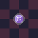
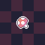

Hi - I’m Martin.
Tech-savvy and hands-on: I build practical tools, automate repetitive tasks, and keep projects moving across software and hardware. When I’m not fixing things, I tinker with pixel art and hardware projects.
Highlights
-
Grantargó Kft. - Website development
Designed and implemented the corporate website: layout, responsive styles, and deployment pipelines to keep the site fast and maintainable.
-
C# GUI - Worktime document generator (Windows)
A small Windows tool that automates worktime document creation by querying calendar/holiday APIs and producing formatted outputs for reporting.
-
Systems & Automation
Infrastructure work: orchestration, monitoring and small automation pieces that reduce manual intervention and improve reliability.
Gallery preview


About
I prefer solutions that are reliable day-to-day: clear, repeatable processes and small tools that solve problems without adding overhead. Read more